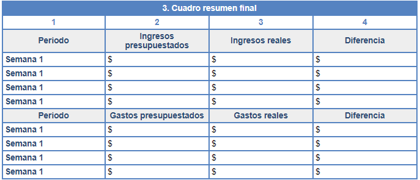

Tema 4: Revisión de nuestro presupuesto
Para revisar que el presupuesto que realizamos esté lo más apegado a la realidad y a tus necesidades, hay que ir comparando los gastos e ingresos que vas teniendo. De esta manera podremos ver claramente lo planeado contra la realidad y detectar en dónde estuvieron las diferencias. Este ejercicio nos servirá para realizar de una mejor manera nuestros siguientes presupuestos.
Un formato que te puede ser útil para realizar este ejercicio es la siguiente tabla. En donde mostramos lo gastado en toda la semana contra lo presupuestado y localizamos las diferencias.
Toma como referencia los formatos que te hemos presentado anteriormente y utiliza este para resumir los ingresos y gastos mensuales. Adicionalmente incluye los ingresos y gastos que tenías planeado realizar; identifica y analiza las diferencias, para que cada mes que realices tu presupuesto, éste sea lo más cercano posible a la realidad y a tus necesidades.
Por medio de las tablas comparativas podemos darnos cuenta en qué cosas son en las que más estamos gastando, de esta manera podemos analizar si los gastos que tenemos son realmente necesarios o podemos llegar a evitarlos, para así destinar ese dinero al ahorro o bien, invertirlo. Sin embargo, es importante recordar que cada familia tiene sus propias prioridades, y es con base en esto que construimos nuestro presupuesto.
Hemos concluido el módulo 4, te invitamos a leer las conclusiones.